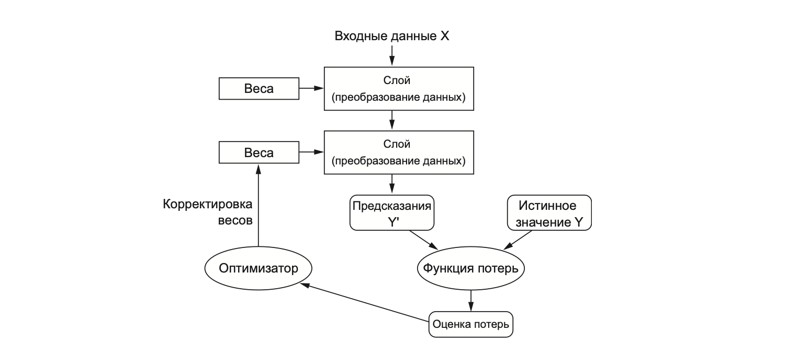
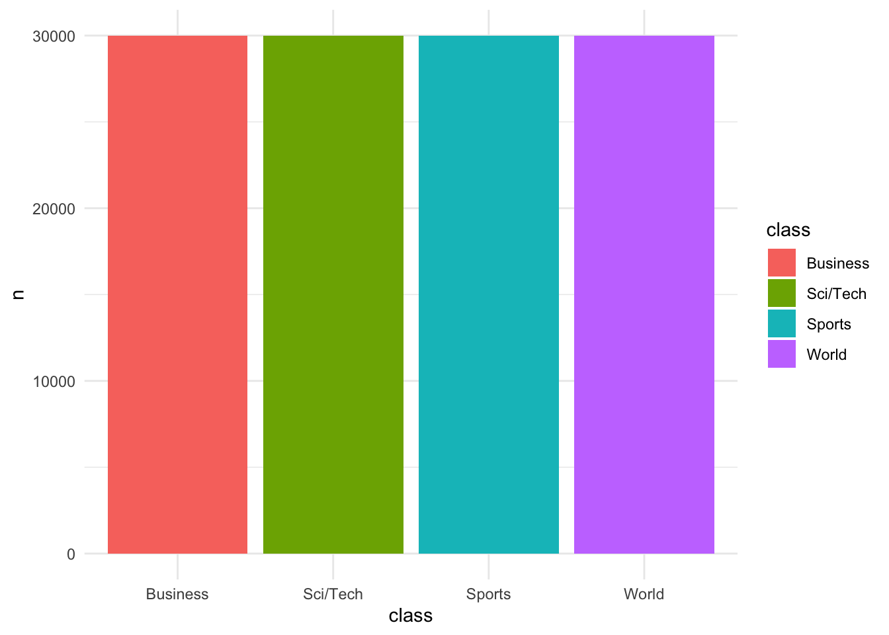
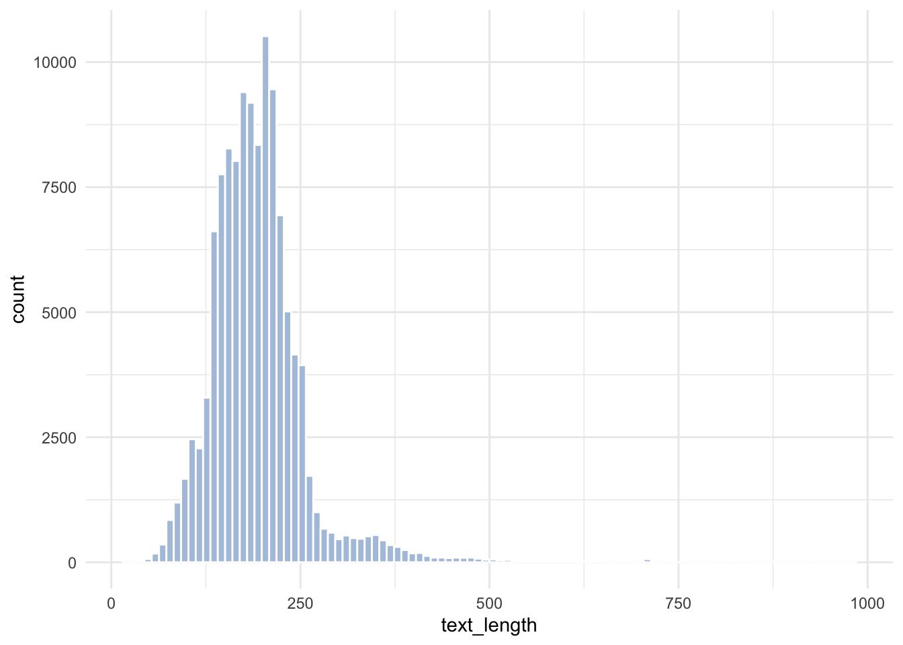
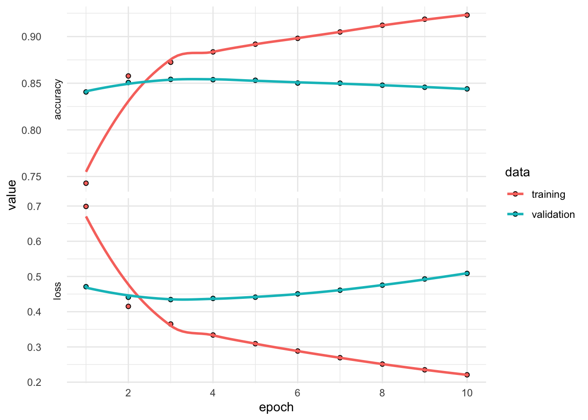
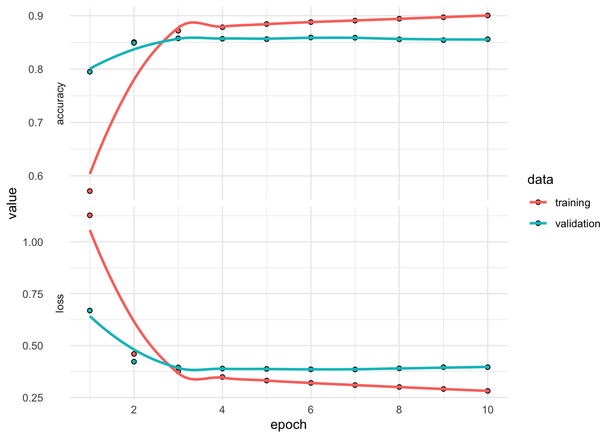
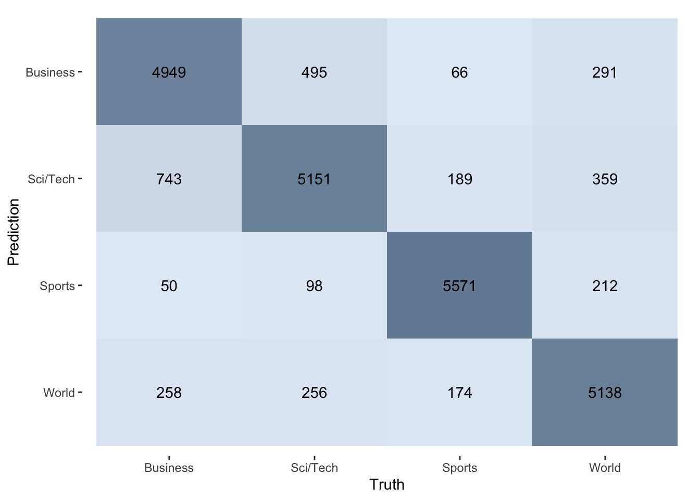
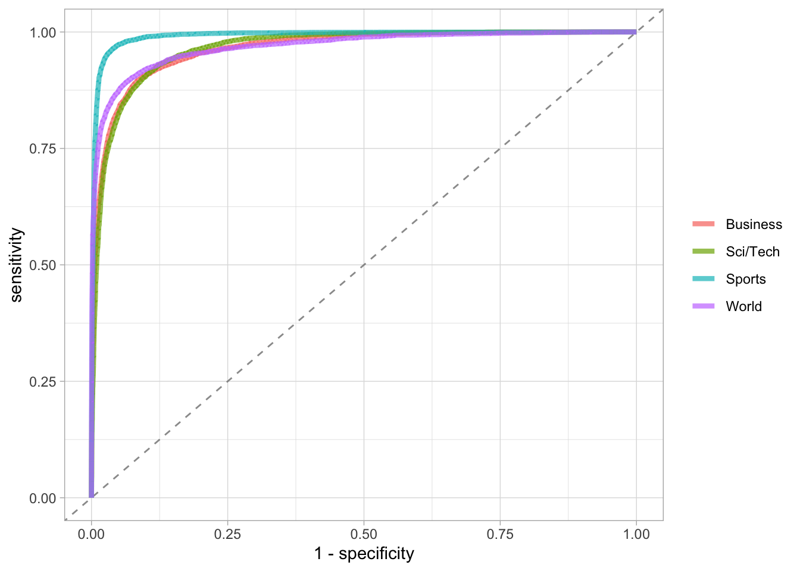

library(tidyverse)
library(tidymodels)
library(textrecipes)
conflicted::conflict_prefer("filter", winner = "dplyr")26 Глубокое обучение
26.1 Основные понятия
В предыдущих главах мы использовали такие алгоритмы, как регуляризованные линейные модели, машины опорных векторов и наивные байесовские модели для предсказания результатов на основе признаков, включая текстовые данные. Модели глубокого обучения решают те же задачи и преследуют те же цели, однако используются другие алгоритмы.
Глубокое обучение – это особый раздел машинного обучения. Под “глубиной” в глубоком обучении не подразумевают более глубокое понимание, достигаемое этим подходом; идея заключается в многослойном представлении. Количество слоев, которые делится модель данных, называют глубиной модели (Шолле 2023, 33).
Слои в модели глубокого обучения соединены в сеть, и такие модели называют нейронными сетями, хотя по сути они работают не так, как человеческий мозг. Слои могут быть соединены по-разному — такие конфигурации называют архитектурами сети.
В этом уроке мы познакомимся с полносвязной (dense) нейронной сетью для работы с текстом. Это одна из самых простых архитектур, и обычно такая модель не показывает наилучших результатов на текстовых данных, но с неё удобно начать, чтобы понять сам процесс построения и оценки глубоких моделей для работы с текстом. Кроме того, этот тип архитектуры может быть своеобразным мостом между методами “мешка слов”, которые мы использовали ранее, и более сложными подходами, позволяющими учитывать не только частотность слов, но также их последовательности.
На рисунке показана архитектура полносвязной прямой нейронной сети (feed-forward). Входные данные поступают в сеть сразу и полностью (в данном случае — полностью) соединены с первым скрытым слоем. Слой называется «скрытым», потому что не связан с внешним миром; этим занимаются только входной и выходной слои. Нейроны каждого слоя соединяются лишь со следующим слоем. Количество слоев и узлов в каждом из них может меняться; эти параметры называются гиперпараметрами и выбираются исследователем.
Под обучением сети подразумевается поиск набора значений весов всех слоев в сети, при котором сеть будет правильно отображать образцовые входные данные в соответствующие им результаты. Первоначально весам присваиваются случайные значения, но постепенно они корректируются в нужном направлении. “Нужным” в данном случае считается такое направление, которое минимизирует функцию потерь.

За корректировку отвечает оптимизатор — это алгоритм, который управляет процессом обучения нейронной сети, корректируя веса модели с целью минимизации функции ошибки (или функции потерь). Проще говоря, оптимизатор помогает найти такие значения параметров, при которых сеть даёт наилучшие предсказания. Для этого он реализует алгоритм обратного распространения ошибки (backpropagation): для каждого параметра вычисляется вклад, который он вносит в значение потерь (Шолле 2023, 93).
Этот вклад определяется с помощью градиентов. Градиент – это обобщение понятия производной для функций, принимающих тензоры (многомерные массивы чисел) в качестве входных данных (Шолле 2023, 83). Градиент функции f – это вектор, который указывает направление наискорейшего роста этой функции, при этом модуль градиента равен скорости изменения функции в этом направлении.
Оптимизатор обновляет веса пропорционально этим градиентам (с учетом параметра скорости обучения), что позволяет постепенно приближаться к минимуму функции потерь. Градиентный спуск (gradient descent) — это метод оптимизации, который использует вычисленные градиенты для обновления весов сети с целью минимизации функции потерь. Он корректирует веса в направлении, противоположном градиенту (т.е. в сторону уменьшения ошибки).
26.2 Пакеты и виртуальное окружение
Для работы нам понадобится дополнительно установить и загрузить несколько пакетов.
Пакет keras для R предоставляет удобный интерфейс для Keras, высокоуровневого API для создания нейронных сетей. Keras отвечает за компоненты глубокого обучения высокого уровня: слои, функции потерь, оптимизатор, метрики, обучающий цикл.
Keras опирается на Tensorflow (доступный в R через одноименный пакет), который отвечает за низкоуровневые манипуляции с тензорами.
Пакет
{reticulate}позволяет запускать Python-код прямо из R. Это обеспечивает интеграцию с Keras и Tensorflow: многие современные нейросетевые пакеты в R (в том числе{keras}и{tensorflow}) — всего лишь “обёртки” над Python-библиотеками.
library(keras3)
library(tensorflow)
library(reticulate)Теперь попробуем узнать, какая установлена версия Python на машине. При необходимости обновите.
py_config()
# python: /Users/olga/Library/Caches/org.R-project.R/R/reticulate/uv/cache/archive-v0/iRJimXLaYLGeT_iEQWqHf/bin/python3
# libpython: /Users/olga/Library/Caches/org.R-project.R/R/reticulate/uv/python/cpython-3.11.12-macos-aarch64-none/lib/libpython3.11.dylib
# pythonhome: /Users/olga/Library/Caches/org.R-project.R/R/reticulate/uv/cache/archive-v0/iRJimXLaYLGeT_iEQWqHf:/Users/olga/Library/Caches/org.R-project.R/R/reticulate/uv/cache/archive-v0/iRJimXLaYLGeT_iEQWqHf
# virtualenv: /Users/olga/Library/Caches/org.R-project.R/R/reticulate/uv/cache/archive-v0/iRJimXLaYLGeT_iEQWqHf/bin/activate_this.py
# version: 3.11.12 (main, Apr 9 2025, 03:49:53) [Clang 20.1.0 ]
# numpy: /Users/olga/Library/Caches/org.R-project.R/R/reticulate/uv/cache/archive-v0/iRJimXLaYLGeT_iEQWqHf/lib/python3.11/site-packages/numpy
# numpy_version: 2.1.3
# keras: /Users/olga/Library/Caches/org.R-project.R/R/reticulate/uv/cache/archive-v0/iRJimXLaYLGeT_iEQWqHf/lib/python3.11/site-packages/keras
#
# NOTE: Python version was forced by py_require()Убедимся, что Питон работает. Если все ок, вы увидите число pi.
py_run_string("import math; result = math.pi")
py$result[1] 3.141593Проверим наличие keras и tensorflow.
py_module_available("keras")[1] TRUEpy_module_available("tensorflow")[1] TRUEЕсли хоть один из них отсутствует, устанавливаем keras и tensorflow в текущее Python-окружение.
py_install(c("keras", "tensorflow"))Если вы используете эфемерное (временное) виртуальное окружение, которое управляется {reticulate} автоматически, то py_install() выдаст предупреждение и посоветует использовать py_require(), чтобы корректно установить или подключить пакеты без нарушения целостности окружения.
py_require(c("keras", "tensorflow"))Это установит последние совместимые версии этих пакетов с помощью pip в вашу текущую виртуальную среду.
Если вы хотите не эфемерную, а постоянную виртуальную среду, можно создать её вручную:
# Только один раз!
virtualenv_create("myenv",
# опционально: укажите конкретную версию
python = "/usr/bin/python3.11"
)
# Активировать для reticulate
use_virtualenv("myenv", required = TRUE)
# Установить нужные модули
virtualenv_install("myenv", c("tensorflow", "keras"))Тогда {reticulate} будет использовать стабильное окружение, которое сохранится между сессиями. При необходимости узнать полный путь к нему можно так:
file.path(reticulate::virtualenv_root(), "myenv")Убедимся, что все работает.
py_run_string("
import tensorflow as tf
import keras
print('TensorFlow version:', tf.__version__)
print('Keras version:', keras.__version__)
")TensorFlow version: 2.19.0
Keras version: 3.10.0Ура, победа 🎈🎉🎊
26.3 Данные: категории новостей
library(textdata)
ag_news <- textdata::dataset_ag_news()
ag_newsag_news |>
count(class) |>
mutate(class = forcats::fct_reorder(class, n)) |>
ggplot(aes(x = class, y = n, fill = class)) +
geom_col() +
theme_minimal()
ag_news |>
mutate(text_length = nchar(description)) |>
ggplot(aes(text_length)) +
geom_histogram(fill = "lightsteelblue", bins = 100, color = "white") +
theme_minimal()
26.4 Разделение данных
Функция initial_validation_split() создает случайное разделение данных на три части: обучающую (training set), валидационную (validation set) и тестовую (testing set) выборки. Функции training(), validation() и testing() позволяют извлекать соответствующие подмножества данных после разбиения.
set.seed(24052025)
data_split <- ag_news |>
mutate(class = as.factor(class)) |>
initial_validation_split(strata = class)
data_split<Training/Validation/Testing/Total>
<72000/24000/24000/120000>data_train <- training(data_split)
data_validate <- validation(data_split)
data_test <- testing(data_split)26.5 Препроцессинг: BOW
Мы начнем с простейшей модели типа “мешок слов”. Важно помнить, однако, что, поскольку мешок слов не сохраняет порядок следования токенов, этот метод обычно используется в поверхностных моделях обработки естественного языка и крайне редко – в моделях глубокого обучения (Шолле 2023, 414).
Число признаков уменьшаем за счет удаления цифр и стопслов. Установим максимальное значение признаков на 1000 (в реальных задачах должно быть больше). Обратите внимание, что исходная формула не задаёт зависимой переменной. Это нужно для удобства преобразования в матричный формат.
bow_rec <- recipe( ~ description, data = data_train) |>
step_mutate(description = stringr::str_remove_all(description, "\\d+")) |>
step_tokenize(description) |>
step_stopwords(description) |>
step_tokenfilter(all_predictors(),
max_tokens = 1000,
min_times = 2) |>
step_tfidf(all_predictors()) |>
step_zv(all_predictors()) |>
step_normalize(all_predictors())
bow_rec── Recipe ──────────────────────────────────────────────────────────────────────── Inputs Number of variables by rolepredictor: 1── Operations • Variable mutation for: stringr::str_remove_all(description, "\\d+")• Tokenization for: description• Stop word removal for: description• Text filtering for: all_predictors()• Term frequency-inverse document frequency with: all_predictors()• Zero variance filter on: all_predictors()• Centering and scaling for: all_predictors()Применим рецепт к обучающим данным. В функции bake() аргумент composition = "matrix" определяет формат возвращаемого результата. По умолчанию bake() возвращает tibble (или data.frame), где каждая строка — это наблюдение, а столбцы — признаки. Но мы планируем отдавать признаки нейросети, а она принимает матрицы на вход. Число элементов матрицы – 72 млн.
bow_rec_prep <- prep(bow_rec)
train_bow_rec <- bow_rec_prep |>
bake(new_data = NULL,
composition = "matrix")valid_bow_rec <- bake(bow_rec_prep,
new_data = data_validate,
composition = "matrix")26.6 Перекодирование меток
One-hot кодирование меток классов — это способ представления категориальных переменных в виде бинарных векторов.
class_train <- data_train |>
pull(class) |>
as.factor() |>
as.integer()Функция to_categorical() из пакета {keras} используется для преобразования вектора классов (представленного в виде целых чисел) в бинарную матрицу классов. Функция принимает вектор целочисленных меток классов, например, {0, 1, 2, 3}, и преобразует его в one-hot матрицу, где каждый класс кодируется бинарным вектором.
Пример:
[,1] [,2] [,3]
[1,] 1 0 0 # Класс 0
[2,] 0 1 0 # Класс 1
[3,] 0 0 1 # Класс 2
[4,] 0 1 0 # Класс 1
[5,] 1 0 0 # Класс 0Здесь:
- Каждая строка соответствует одному образцу.
- Каждый столбец – это конкретный класс.
- 1 стоит в позиции индекса класса, остальное –
0.
Эта функция используется в нейронных сетях, потому что выходной слой softmax ожидает one-hot представление меток классов.
class_train_onehot <- to_categorical(class_train-1, num_classes = 4)
head(class_train_onehot) [,1] [,2] [,3] [,4]
[1,] 1 0 0 0
[2,] 1 0 0 0
[3,] 1 0 0 0
[4,] 1 0 0 0
[5,] 1 0 0 0
[6,] 1 0 0 0Теперь проделаем то же самое для валидационного набора и для тестовой выборки.
class_valid <- data_validate |>
pull(class) |>
as.factor() |>
as.integer()
class_valid_onehot <- to_categorical(class_valid-1, num_classes = 4)head(class_valid_onehot) [,1] [,2] [,3] [,4]
[1,] 1 0 0 0
[2,] 1 0 0 0
[3,] 1 0 0 0
[4,] 1 0 0 0
[5,] 1 0 0 0
[6,] 1 0 0 0class_test <- data_test |>
pull(class) |>
as.factor() |>
as.integer()
class_test_onehot <- to_categorical(class_test-1, num_classes = 4)26.7 Спецификация модели BOW
Создаем пустую последовательную (sequential) модель. В последовательной модели слои идут один за другим, по порядку. Добавляем к ней два полносвязных (dense) слоя. Аргументом units = 64 указываем, что в первом и втором слое будет 64 нейрона. Число нейронов подбирается экспериментально. Наличие большей размерности (многомерное пространство представления) позволяет модели изучать более сложные представления, но делает модель более дорогостоящей в вычислительном отношении и может привести к переобучению (Шолле 2023, 149).
Аргумент activation = "relu" означает, что скрытые слои используют функцию активации relu (rectified linear unit, блок линейной ректификации). Эта функция преобразует отрицательные значения в ноль.
Без функции активации, такой как relu (также называемой фактором нелинейности) полносвязный слой layer_dense будет состоять из двух линейных операций – скалярного произведения и сложения: output <- dot(input, W) + b Такой слой может обучаться только на линейных (аффинных) преобразованиях входных данных: пространство гипотез слоя было бы совокупностью всех возможных линейных преобразований входных данных в n-мерное пространство. Такое пространство гипотез слишком ограничено, и наложение нескольких уровней представлений друг на друга не приносило бы никакой выгоды, потому что сколь угодно длинная последовательность линейных преобразований все равно остается линейным преобразованием. – (Шолле 2023, 151)
После этого добавляем выходной слой. Здесь число нейронов соответствует числу предсказываемых классов, а активация softmax (activation = "softmax") превращает выходы нейронов в вероятности, сумма которых равна 1.
bow_model <- keras3::keras_model_sequential() |>
layer_dense(units = 32, activation = "relu") |>
layer_dense(units = 32, activation = "relu") |>
layer_dense(units = 4, activation = "softmax")
bow_modelModel: "sequential"
┏━━━━━━━━━━━━━━━━━━━━━━━━━━━━━━━━━━━┳━━━━━━━━━━━━━━━━━━━━━━━━━━┳━━━━━━━━━━━━━━━┓
┃ Layer (type) ┃ Output Shape ┃ Param # ┃
┡━━━━━━━━━━━━━━━━━━━━━━━━━━━━━━━━━━━╇━━━━━━━━━━━━━━━━━━━━━━━━━━╇━━━━━━━━━━━━━━━┩
│ dense (Dense) │ ? │ 0 (unbuilt) │
├───────────────────────────────────┼──────────────────────────┼───────────────┤
│ dense_1 (Dense) │ ? │ 0 (unbuilt) │
├───────────────────────────────────┼──────────────────────────┼───────────────┤
│ dense_2 (Dense) │ ? │ 0 (unbuilt) │
└───────────────────────────────────┴──────────────────────────┴───────────────┘
Total params: 0 (0.00 B)
Trainable params: 0 (0.00 B)
Non-trainable params: 0 (0.00 B)Модель готова к дальнейшему обучению и применению. Осталось выбрать функцию потерь и оптимизатор.
bow_model |>
compile(
optimizer = "adam",
loss = "categorical_crossentropy",
metrics = c("accuracy")
)
bow_modelModel: "sequential"
┏━━━━━━━━━━━━━━━━━━━━━━━━━━━━━━━━━━━┳━━━━━━━━━━━━━━━━━━━━━━━━━━┳━━━━━━━━━━━━━━━┓
┃ Layer (type) ┃ Output Shape ┃ Param # ┃
┡━━━━━━━━━━━━━━━━━━━━━━━━━━━━━━━━━━━╇━━━━━━━━━━━━━━━━━━━━━━━━━━╇━━━━━━━━━━━━━━━┩
│ dense (Dense) │ ? │ 0 (unbuilt) │
├───────────────────────────────────┼──────────────────────────┼───────────────┤
│ dense_1 (Dense) │ ? │ 0 (unbuilt) │
├───────────────────────────────────┼──────────────────────────┼───────────────┤
│ dense_2 (Dense) │ ? │ 0 (unbuilt) │
└───────────────────────────────────┴──────────────────────────┴───────────────┘
Total params: 0 (0.00 B)
Trainable params: 0 (0.00 B)
Non-trainable params: 0 (0.00 B)Здесь compile() — функция компиляции. Она “собирает” модель для обучения: определяет, как будут считаться ошибки (функция потерь), какой алгоритм оптимизации использовать, и по каким метрикам отслеживать качество.
Оптимизатор Adam (аргумент optimizer = "adam") - один из самых популярных оптимизаторов в глубоком обучении. Adam автоматически подбирает скорость обучения для каждого параметра. Работает быстро и надёжно на большинстве задач — особенно если нет времени или желания подбирать сложные параметры вручную.
Перекрестная энтропия (loss = "categorical_crossentropy") – функция потерь для задач многоклассовой классификации (multi-class classification). Эта функция подходит, когда на выходе модели softmax и целевая переменная — one-hot вектор.
Также прописываем метрику качества работы модели.
26.8 Обучение BOW-модели
Теперь проведем обучение модели в течение 10 эпох (выполним 10 итераций по всем образцам обучающих данных) пакетами по 512 образцов.
Пакет (batch) - это небольшой набор образцов, которые одновременно обрабатываются моделью. Количество часто равно степени двойки, чтобы упростить выделение памяти на процессоре. В процессе обучения пакет используется для одного обновления градиентного спуска, применяемого к весам модели.
Эпоха (epoch) — это один полный проход (прогон) по всему тренировочному датасету при обучении модели машинного обучения, например, нейронной сети. Например, если у вас есть 1000 картинок, а batch_size = 100, то за одну эпоху модель обработает все 1000 картинок по 100 за раз — всего 10 шагов (итераций). Модель обычно обучают несколько (десятков или сотен) эпох, чтобы она постепенно улучшала свои прогнозы.
Также будем следить за потерями и точностью на отложенных образцах.
bow_history <- bow_model |>
fit(
x = train_bow_rec,
y = class_train_onehot,
batch_size = 512,
epochs = 10,
validation_data = list(valid_bow_rec, class_valid_onehot),
verbose = FALSE
)
bow_history
Final epoch (plot to see history):
accuracy: 0.923
loss: 0.2209
val_accuracy: 0.8439
val_loss: 0.5087 После обучения в переменной bow_history сохраняется история процесса обучения: метрики, ошибки, прогресс и т.д. Взглянем на результат.
plot(bow_history) +
theme_minimal()
bow_df <- as.data.frame(bow_history)
bow_history
Final epoch (plot to see history):
accuracy: 0.923
loss: 0.2209
val_accuracy: 0.8439
val_loss: 0.5087 Чтобы добиться идеального обучения модели, ее сначала нужно переобучить. Если вы не знаете заранее, где лежит граница, вам придется пересечь ее, чтобы найти. Следовательно, ваша первоначальная цель, когда вы начинаете работать над задачей, заключается в том, чтобы получить модель, которая хоть в какой-то степени обобщает и способна к переобучению. Далее вы начинаете улучшать обобщение, попутно борясь с переобучением. – (Шолле 2023, 193)
26.9 Препроцессинг: Onehot-кодирование
step_sequence_onehot() превращает токены в числовой формат аналогично step_tf() и step_tfidf(), но в отличие от них учитывает порядок следования токенов.
Рассмотрим на небольшом примере отсюда:
small_data <- tibble(text = c(
"adventure dice game",
"spooky dice game",
"illustrated book of monsters",
"monsters, ghosts, goblins, me, myself and i"
))
small_spec <- recipe(~ text, data = small_data) |>
step_tokenize(text) |>
step_sequence_onehot(text, sequence_length = 6, prefix = "")
prep(small_spec)── Recipe ──────────────────────────────────────────────────────────────────────── Inputs Number of variables by rolepredictor: 1── Training information Training data contained 4 data points and no incomplete rows.── Operations • Tokenization for: text | Trained• Sequence 1 hot encoding for: text | Trainedprep(small_spec) |>
# 2 означает второй шаг рецепта
tidy(2)prep(small_spec) |>
bake(new_data = NULL, composition = "matrix") _text_1 _text_2 _text_3 _text_4 _text_5 _text_6
[1,] 0 0 0 1 4 5
[2,] 0 0 0 14 4 5
[3,] 0 0 9 3 13 11
[4,] 6 7 10 12 2 8В четвертой строке первое слово = 6, а это не “монстры”! Так произошло, потому что предложение слишком длинное и не вмещается в длину кодируемой последовательности (ее регулирует аргумент sequence_length). В таком случае текст усекается (аргумент truncating по умолчанию имеет значение "pre", но можно изменить на "post"). В коротких текстах добавляются нули, за это отвечает параметр padding. Немного изменим рецепт:
recipe(~ text, data = small_data) |>
step_tokenize(text) |>
step_sequence_onehot(text, sequence_length = 6,
prefix = "",
padding = "post",
truncating = "post") |>
prep() |>
bake(new_data = NULL, composition = "matrix") _text_1 _text_2 _text_3 _text_4 _text_5 _text_6
[1,] 1 4 5 0 0 0
[2,] 14 4 5 0 0 0
[3,] 9 3 13 11 0 0
[4,] 11 6 7 10 12 2Теперь “монстры” в начале! А все нули сдвинулись вправо.
Напишем рецепт для новостного датасета.
max_words = 1500
max_length = 150
onehot_rec <- recipe( ~ description, data = data_train) |>
step_mutate(description = stringr::str_remove_all(description, "\\d+")) |>
step_tokenize(description) |>
step_stopwords(description) |>
step_tokenfilter(description,
max_tokens = max_words,
min_times = 10) |>
step_sequence_onehot(description,
sequence_length = max_length,
# потому что в новостях все самое важное обычно в начале
truncating = "post",
prefix = "")
onehot_rec── Recipe ──────────────────────────────────────────────────────────────────────── Inputs Number of variables by rolepredictor: 1── Operations • Variable mutation for: stringr::str_remove_all(description, "\\d+")• Tokenization for: description• Stop word removal for: description• Text filtering for: description• Sequence 1 hot encoding for: descriptiononehot_prep <- prep(onehot_rec)
onehot_prep── Recipe ──────────────────────────────────────────────────────────────────────── Inputs Number of variables by rolepredictor: 1── Training information Training data contained 72000 data points and no incomplete rows.── Operations • Variable mutation for: ~stringr::str_remove_all(description, "\\d+") |
Trained• Tokenization for: description | Trained• Stop word removal for: description | Trained• Text filtering for: description | Trained• Sequence 1 hot encoding for: description | TrainedДля следующего урока мне понадобится сохраненный препроцессор.
saveRDS(onehot_prep, "../data/onehot_prep.rds")set.seed(25052025)
tidy(onehot_prep, 5) |>
sample_n(size = 10)onehot_train <- bake(onehot_prep,
new_data = NULL,
composition = "matrix")Количество рядов в матрице соответствует числу наблюдений в обучающей выборке, а число столбцов – выбранной длине последовательности.
dim(onehot_train)[1] 72000 150Также подготовим валидационную выборку.
onehot_valid <- bake(onehot_prep,
new_data = data_validate,
composition = "matrix")dim(onehot_valid)[1] 24000 150onehot_test <- bake(onehot_prep,
new_data = data_test,
composition = "matrix")26.10 Полносвязная нейросеть на основе Onehot
Наша вторая модель глубокого обучения преобразует тексты в эмбеддинги, затем «расплющивает» их (делает одномерными), а после этого обучает полносвязный слой (dense network), чтобы предсказать класс новости.
dense_model <- keras_model_sequential() |>
layer_embedding(input_dim = max_words + 1,
output_dim = 12) |>
layer_flatten() |>
layer_dense(units = 32, activation = "relu") |>
layer_dense(units = 4, activation = "softmax")dense_modelModel: "sequential_1"
┏━━━━━━━━━━━━━━━━━━━━━━━━━━━━━━━━━━━┳━━━━━━━━━━━━━━━━━━━━━━━━━━┳━━━━━━━━━━━━━━━┓
┃ Layer (type) ┃ Output Shape ┃ Param # ┃
┡━━━━━━━━━━━━━━━━━━━━━━━━━━━━━━━━━━━╇━━━━━━━━━━━━━━━━━━━━━━━━━━╇━━━━━━━━━━━━━━━┩
│ embedding (Embedding) │ ? │ 0 (unbuilt) │
├───────────────────────────────────┼──────────────────────────┼───────────────┤
│ flatten (Flatten) │ ? │ 0 (unbuilt) │
├───────────────────────────────────┼──────────────────────────┼───────────────┤
│ dense_3 (Dense) │ ? │ 0 (unbuilt) │
├───────────────────────────────────┼──────────────────────────┼───────────────┤
│ dense_4 (Dense) │ ? │ 0 (unbuilt) │
└───────────────────────────────────┴──────────────────────────┴───────────────┘
Total params: 0 (0.00 B)
Trainable params: 0 (0.00 B)
Non-trainable params: 0 (0.00 B)dense_model |>
compile(
optimizer = "adam",
loss = "categorical_crossentropy",
metrics = c("accuracy")
)26.11 Обучение модели на основе Onehot-кодирования
dense_history <- dense_model |>
fit(
x = onehot_train,
y = class_train_onehot,
batch_size = 512,
epochs = 10,
#validation_data = list(onehot_valid, class_valid_onehot),
# заметьте еще один способ использовать часть данных для валидации
validation_split = 0.25,
verbose = FALSE
)plot(dense_history) +
theme_minimal()
dense_history
Final epoch (plot to see history):
accuracy: 0.9004
loss: 0.2816
val_accuracy: 0.856
val_loss: 0.3961 26.12 Прогнозирование и оценка
График выше показывает, что переобучение начинается после третьей эпохи, поэтому обучим модель с нуля в течение трех эпох и затем оценим ее на контрольных данных.
dense_model <- keras_model_sequential() |>
layer_embedding(input_dim = max_words + 1,
output_dim = 12) |>
layer_flatten() |>
layer_dense(units = 32, activation = "relu") |>
layer_dense(units = 4, activation = "softmax")
dense_model |>
compile(
optimizer = "adam",
loss = "categorical_crossentropy",
metrics = c("accuracy")
)
dense_model |>
fit(
x = onehot_train,
y = class_train_onehot,
batch_size = 512,
epochs = 3
)Epoch 1/3
141/141 - 1s - 6ms/step - accuracy: 0.6458 - loss: 0.9426
Epoch 2/3
141/141 - 0s - 3ms/step - accuracy: 0.8594 - loss: 0.4179
Epoch 3/3
141/141 - 0s - 4ms/step - accuracy: 0.8744 - loss: 0.3651dense_model |> evaluate(
x = onehot_test,
y = class_test_onehot
)750/750 - 0s - 484us/step - accuracy: 0.8670 - loss: 0.3735$accuracy
[1] 0.8670416
$loss
[1] 0.373471Простейшая модель позволила нам добиться точности около 86%. Этот результат можно улучшить, используя более сложные архитектуры. Пока используем модель для генерации предсказаний.
test_pred <- dense_model |>
predict(onehot_test,
verbose = FALSE)
head(test_pred) [,1] [,2] [,3] [,4]
[1,] 0.9716369 0.017603956 1.630711e-05 0.010742922
[2,] 0.7585958 0.238371536 1.252550e-04 0.002907466
[3,] 0.2803436 0.628519177 3.783279e-02 0.053304415
[4,] 0.8279606 0.132275760 3.173434e-03 0.036590274
[5,] 0.9920675 0.002168546 3.027616e-04 0.005461116
[6,] 0.1219981 0.636405408 3.729754e-02 0.204298928Извлечем индексы классов с наибольшей вероятностью.
predicted_classes <- apply(test_pred, 1, which.max)
head(predicted_classes)[1] 1 1 2 1 1 2Восстановим исходные названия классов.
class_levels <- levels(data_train$class)
# Преобразуем индексы в фактор с исходными метками
predicted_labels <- factor(predicted_classes,
levels = 1:4,
labels = class_levels)
head(predicted_labels)[1] Business Business Sci/Tech Business Business Sci/Tech
Levels: Business Sci/Tech Sports Worldpred_tbl <- tibble(truth = data_test$class,
prediction = predicted_labels)
pred_tblmetrics(pred_tbl, truth = truth, estimate = prediction)pred_tbl |>
conf_mat(truth, prediction) |>
autoplot(type = "heatmap") +
scale_fill_gradient(
low = "#E3ECF6",
high = "#758CA2"
)
Преобразуем матрицу вероятностей в tibble с именами классов.
prob_tbl <- as_tibble(test_pred) |>
set_names(paste0(".pred_", class_levels)) Объединяем с истинными метками.
roc_data <- bind_cols(
truth = data_test$class,
prob_tbl
)
roc_dataroc_data |>
roc_curve(truth = truth, .pred_Business:.pred_World) |>
ggplot(aes(1 - specificity, sensitivity, color = .level)) +
geom_abline(slope = 1, color = "gray50", lty = 2, alpha = 0.8) +
geom_path(linewidth = 1.5, alpha = 0.7) +
labs(color = NULL) +
theme_light()
26.13 Хранение модели
Обученную модель можно сохранить.
save_model(dense_model, "../data/my_dense_model.keras")26.14 Итоги урока
Поздравляем! Вы успешно построили и оценили две нейросетевые архитектуры для классификации текстов. 🎉
В этом уроке вы…
- Освоили разные подходы к представлению текста: BOW (мешок слов) и последовательное one-hot кодирование
- Изучили архитектурные принципы: научились создавать Embedding + Dense слои
- Поняли важность борьбы с переобучением (а также то, что сначала его обязательно надо добиться!)
- Научились оценивать модели, в том числе построили ROC-кривые для многоклассовой задачи и визуализировали матрицу ошибок
- Познакомились с новыми инструментами:
{keras3}и{tensorflow} - Интегрировали Python-библиотеки через
{reticulate}
Этот урок — ваша отправная точка в мире глубокого обучения для NLP. Каждый из использованных компонентов открывает путь к более сложным и мощным моделям. Продолжайте экспериментировать, и пусть ваши нейросети становятся все умнее! 🚀
Шолле, Франсуа. 2023. Глубокое обучение с R и Keras. ДМК.